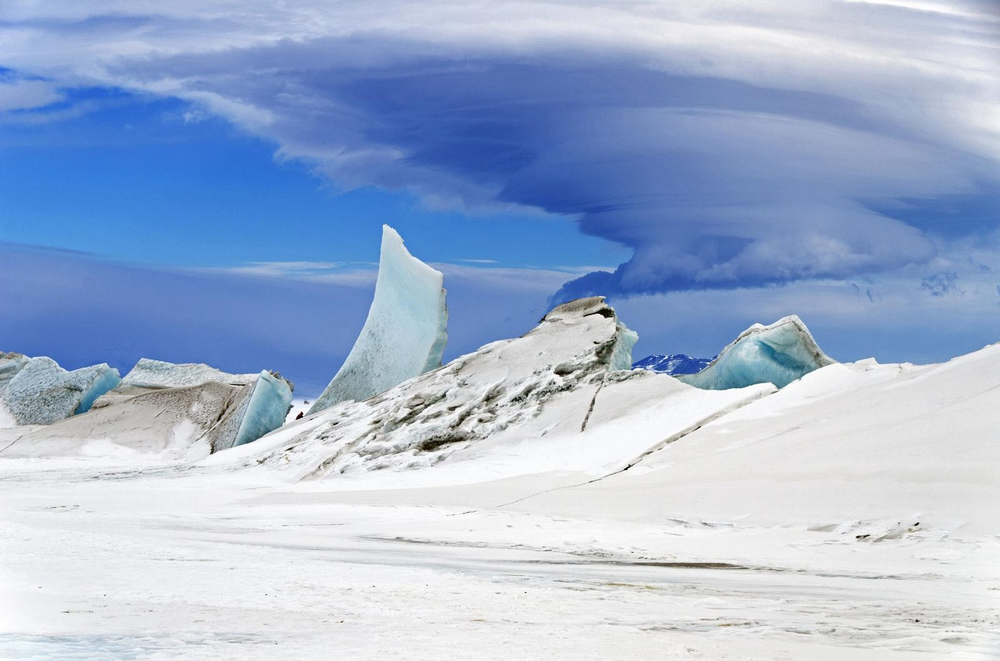
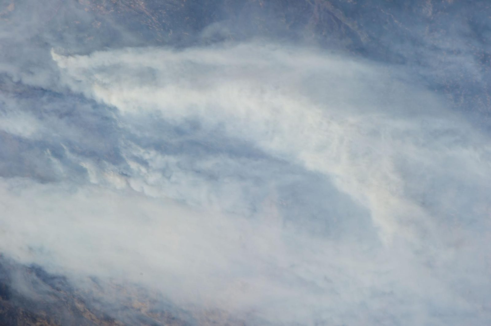
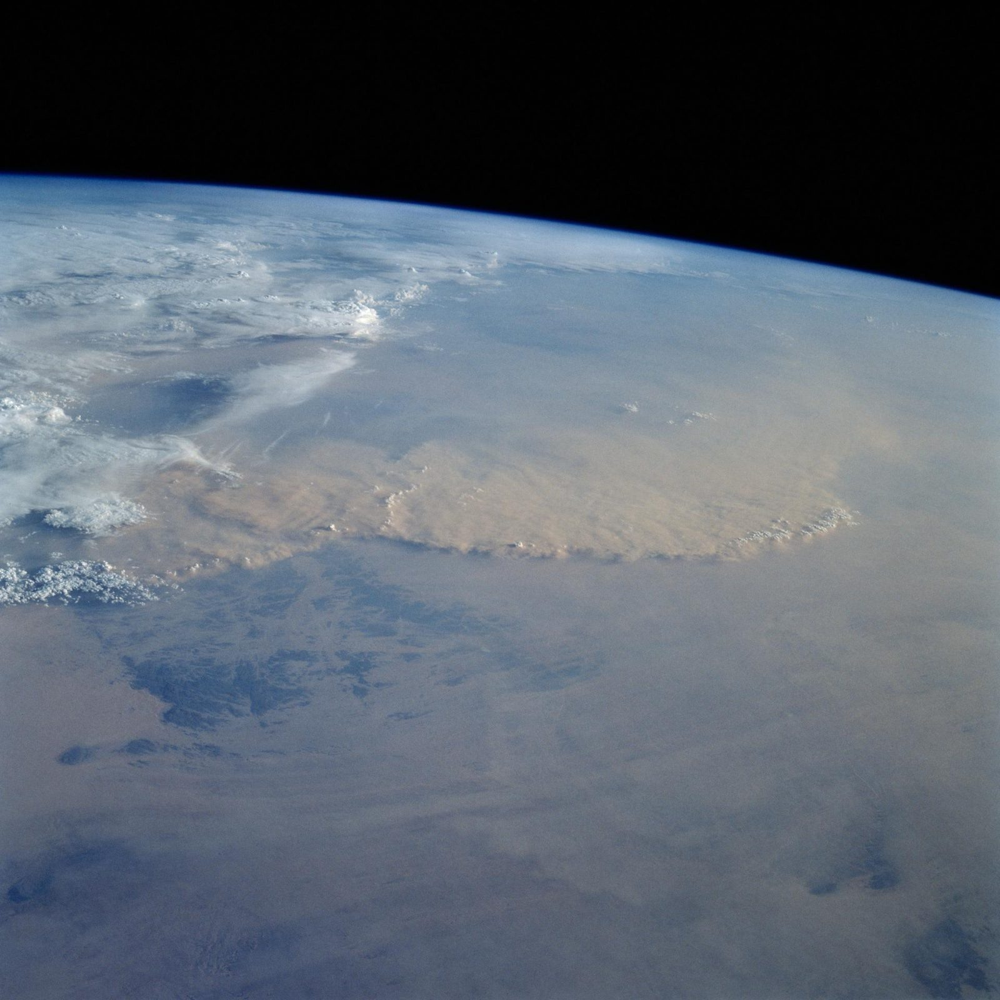

The science of the whole planet
Earth Science is SSAI's largest practice. We help NASA, NOAA, and their partners measure and model the systems that make Earth livable, the climate, the oceans, the ice, the atmosphere, and the carbon and water cycles that move between them. The view from space is only the beginning; our work is the distance traveled between a raw measurement and a validated answer the world can use.
Nearly every NASA system that watches the Earth
SSAI scientists and engineers contribute to nearly every NASA observing system that measures Earth's atmosphere, water, ice, land, and biological activity, and to the NOAA satellites that protect life and property every day. We work the full remote-sensing chain: from algorithm development through calibration and validation, to the data systems and archives that distribute the result.
We observe and model the components of the Earth system, land surface and hydrology, the oceans, the cryosphere, the atmosphere, alongside the data assimilation and high-performance computing that fuse millions of observations into a single, coherent picture of the planet.
 NASA
NASA
Five systems, one connected planet
Earth does not behave as separate parts. Heat absorbed by the ocean drives the atmosphere; melting ice changes the sea; carbon and water move continuously between land, air, and water. SSAI's Earth Science work is organized to follow those connections, measuring each system precisely, then modeling how they shape one another.
The air we model
Temperature, moisture, aerosols, and circulation, observed from space and fused through reanalysis into a continuous, decades-long record of how the atmosphere actually behaves.
The blue engine
Color, height, and biology of the sea surface, from phytoplankton blooms that anchor the marine food web to the heat the ocean stores and moves around the globe.
The frozen edge
Sea ice, ice sheets, and glaciers measured to the centimeter, the part of the Earth system that responds first, and fastest, to a changing climate.
The air we breathe
Trace gases and pollution tracked across continents and, now, hour by hour, connecting what satellites see to the air over a city, a highway, a school.
What moves between
The cycles that tie the systems together, where carbon and water are stored, how they flow between land, ocean, and atmosphere, and how that balance is shifting.
From data to understanding
Data assimilation, modeling, and HPC turn billions of individual observations into the reanalyses, forecasts, and visualizations that let scientists reason about the whole.
SSAI's wedgeA continuous record of the atmosphere
No single satellite has watched the whole atmosphere for the whole satellite era. Reanalysis stitches the record together, and SSAI helps build it.
SSAI scientists support the development of NASA's GEOS modeling system and contribute to MERRA-2, the Modern-Era Retrospective analysis for Research and Applications, Version 2, which assimilates decades of satellite observations into one consistent, gridded record of Earth's atmosphere from 1980 onward. It is one of the most widely used climate datasets in the world.
This is the discipline of data assimilation: blending millions of measurements from many instruments, each with its own errors and gaps, into a single best estimate of the atmosphere's true state. The MERRA-2 effort earned a 2019 NASA Agency Honor Award, and it is the kind of work that defines SSAI's Earth Science practice, observation, made coherent.
 NASA · ISS Expedition 9
NASA · ISS Expedition 9
Reading the color of the sea
The ocean's color is a measurement. It tells you what is alive in the water, and the ocean's life sets the tempo of the carbon cycle.
SSAI supports PACE, Plankton, Aerosol, Cloud, ocean Ecosystem, NASA's mission to observe ocean color and atmospheric aerosols in unprecedented spectral detail. By resolving the subtle hues of the sea surface, PACE distinguishes between communities of phytoplankton, the microscopic plants that draw carbon out of the atmosphere and form the base of the entire marine food web.
This builds on a long heritage of ocean-color and atmospheric-correction science at SSAI, the algorithms that separate the faint signal of the water from the bright interference of the air above it. The result feeds fisheries, carbon-cycle research, and our understanding of how a warming ocean is changing the life within it.
 NASA · MODIS
NASA · MODIS
Every measurement returns to the same globe
Atmosphere, ocean, ice, land, and air quality are observed by different missions on different orbits, but they describe one connected system. SSAI's role is to bring those streams of data home to a single, coherent picture of the Earth.
Measuring the frozen edge to the centimeter
Ice is the part of the Earth system that moves first. Watching it change requires precision the eye cannot supply.
SSAI contributes to ICESat-2, NASA's ice-monitoring mission, whose laser altimeter measures the height of ice sheets, glaciers, and sea ice with extraordinary accuracy, close enough to detect the thinning of polar ice from hundreds of kilometers above. Turning those laser returns into trustworthy elevation requires careful calibration and validation, the quiet discipline that makes a measurement worth believing.
This work draws on a heritage that reaches to the surface itself: SSAI has supported NASA airborne ice surveys, flying instruments over the poles to ground-truth what the satellites see. From the air and from orbit, the cryosphere is where climate change is written most clearly, and read most carefully.

NASA · Operation IceBridgePollution, watched hour by hour
For decades, air-quality satellites gave one snapshot a day. SSAI helps support the instruments that now watch the air change in real time.
SSAI supports TEMPO, Tropospheric Emissions: Monitoring of Pollution, NASA's first space-based instrument to measure air quality over North America hourly during daylight, tracking ozone, nitrogen dioxide, and other pollutants at neighborhood scale from geostationary orbit. It is a generational shift: from a daily picture to a moving one.
That capability rests on a long heritage of atmospheric-composition science at SSAI, including support for OMI and OMPS, the Ozone Monitoring Instrument and the Ozone Mapping and Profiler Suite, which track the ozone layer and trace pollutants across the globe. Smoke from wildfires, dust lofted off the Sahara, the haze over a city: all of it becomes a measurement, and then a forecast.

NASA · ISS Expedition 36
NASA · STS-49 NASA · ISS Expedition 72
NASA · ISS Expedition 72
The human planet, seen at night
Some of what Earth Science measures is us. The light of cities, traced from orbit, is a record of where people live, and where lives are disrupted.
SSAI scientists are part of the team behind NASA's Black Marble nighttime-lights product, a calibrated, daily measure of the light emitted by Earth's surface after dark. Removing the noise of moonlight, clouds, and the changing seasons to leave a clean signal of human activity is a hard remote-sensing problem, and Black Marble solves it well enough to be used operationally.
The result is a tool for understanding the human side of the Earth system: tracking power outages after a disaster, mapping urbanization and economic activity, and following human displacement. It is a clear example of SSAI's purpose, turning the view from space into understanding that helps people on the ground.
 NASA · Suomi NPP / VIIRS
NASA · Suomi NPP / VIIRS
The full chain, from photon to product
SSAI's value in Earth Science is rarely a single instrument or a single dataset. It is the unbroken chain that connects them, the engineering that gets a sensor working, the algorithms that interpret what it sees, the validation that makes the answer trustworthy, and the data systems that put it in front of the world.
Our research is overseen by Chief Corporate Scientist Oreste Reale, Ph.D., with twenty-five years at NASA Goddard in atmospheric dynamics, hurricanes, and data assimilation, the same disciplines at the heart of how SSAI turns Earth observation into Earth understanding.
- Develop and refine the retrieval algorithms that turn raw radiances into geophysical measurements of the atmosphere, ocean, ice, and land.
- Run calibration and validation, comparing satellite, airborne, and in-situ data, so every product carries a known, defensible accuracy.
- Build and operate the data assimilation and modeling systems, on high-performance computers, that fuse many observations into one coherent state.
- Steward the archives and data systems that distribute Earth-science products to researchers, agencies, and the public worldwide.
- Lead and staff NASA science working groups and mission teams, and publish the peer-reviewed work that converts measurement into understanding.